Lesson 8: SLR: Model Diagnostics
2026-02-04
Learning Objectives
Implement a model with data transformations to meet LINE assumptions.
Use visualizations and cut off points to flag potentially influential points using residuals, leverage, and Cook’s distance
Handle influential points and assumption violations by checking data errors, reassessing the model, and making data transformations.
Process of regression data analysis


Model Selection
Building a model
Selecting variables
Prediction vs interpretation
Comparing potential models
Model Fitting
Find best fit line
Using OLS in this class
Parameter estimation
Categorical covariates
Interactions
Model Evaluation
- Evaluation of model fit
- Testing model assumptions
- Residuals
- Transformations
- Influential points
- Multicollinearity
Model Use (Inference)
- Inference for coefficients
- Hypothesis testing for coefficients
- Inference for expected \(Y\) given \(X\)
- Prediction of new \(Y\) given \(X\)
Let’s remind ourselves of one model we have been working with
We have been looking at the association between life expectancy and cell phones
We used OLS to find the coefficient estimates of our best-fit line
Population model:
\[\begin{aligned} Y &= \beta_0 + \beta_1 \cdot X + \epsilon \\ \text{LE} &= \beta_0 + \beta_1 \text{CP} + \epsilon \end{aligned}\]Estimated model:
| term | estimate | std.error | statistic | p.value |
|---|---|---|---|---|
| (Intercept) | 60.041 | 2.056 | 29.207 | 0.000 |
| cell_phones_100 | 0.094 | 0.017 | 5.546 | 0.000 |

Our residuals will help us a lot in our diagnostics!
The residuals \(\widehat\epsilon_i\) are the vertical distances between
- the observed data \((X_i, Y_i)\)
- the fitted values (regression line) \(\widehat{Y}_i = \widehat\beta_0 + \widehat\beta_1 X_i\)
\[ \widehat\epsilon_i =Y_i - \widehat{Y}_i \text{, for } i=1, 2, ..., n \]
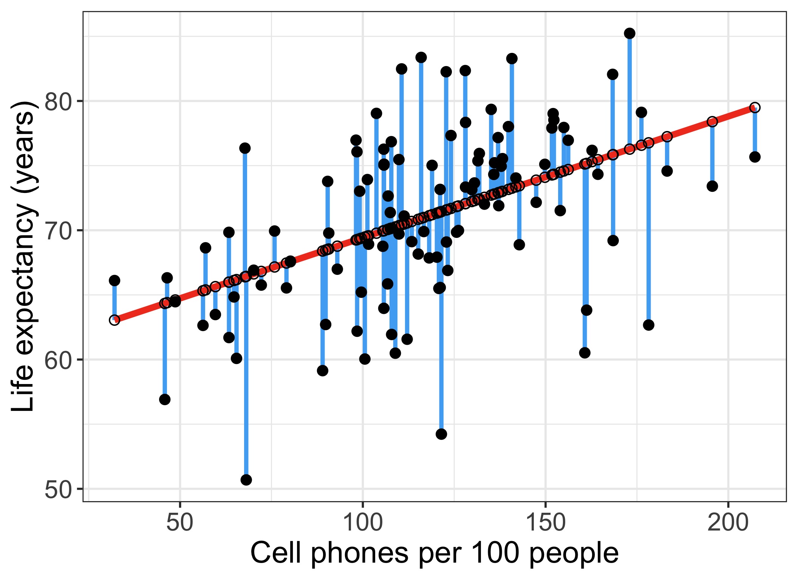
augment(): getting extra information on the fitted model
Run
model1throughaugment()(model1is input)- So we assigned
model1as the output of thelm()function (model1is output)
- So we assigned
Will give us values about each observation in the context of the fitted regression model
- cook’s distance (
.cooksd), fitted value (.fitted, \(\widehat{Y}_i\)), leverage (.hat), residual (.resid), standardized residuals (.std.resid)
- cook’s distance (
Rows: 105
Columns: 8
$ life_exp <dbl> 62.64, 76.07, 73.41, 75.37, 73.66, 71.37, 63.96, 75.47…
$ cell_phones_100 <dbl> 56.2655, 98.3950, 195.6250, 131.4840, 130.5400, 107.50…
$ .fitted <dbl> 65.32037, 69.27372, 78.39761, 72.37873, 72.29015, 70.1…
$ .resid <dbl> -2.6803652, 6.7962791, -4.9876074, 2.9912674, 1.369850…
$ .hat <dbl> 0.038747119, 0.012168777, 0.059882210, 0.011325165, 0.…
$ .sigma <dbl> 5.987137, 5.954886, 5.971571, 5.985846, 5.991701, 5.99…
$ .cooksd <dbl> 4.234809e-03, 8.096656e-03, 2.369189e-02, 1.457236e-03…
$ .std.resid <dbl> -0.45838569, 1.14653081, -0.86249588, 0.50441083, 0.23…Revisiting our LINE assumptions
[L] Linearity of relationship between variables
Check if there is a linear relationship between the mean response (Y) and the explanatory variable (X)
[I] Independence of the \(Y\) values
Check that the observations are independent
[N] Normality of the \(Y\)’s given \(X\) (residuals)
Check that the responses (at each level X) are normally distributed
- Usually measured through the residuals
[E] Equality of variance of the residuals (homoscedasticity)
Check that the variance (or standard deviation) of the responses is equal for all levels of X
- Usually measured through the residuals
Learning Objectives
- Implement a model with data transformations to meet LINE assumptions.
Use visualizations and cut off points to flag potentially influential points using residuals, leverage, and Cook’s distance
Handle influential points and assumption violations by checking data errors, reassessing the model, and making data transformations.
Transformations
When we have issues with our LINE (mostly linearity, normality, or equality of variance) assumptions
- We can use transformations to improve the fit of the model
We can transform the dependent (\(Y\)) variable and/or the independent (\(X\)) variable
- Usually we want to try transforming the \(X\) first
Requires trial and error!!
Major drawback: interpreting the model becomes harder!
Tukey’s transformation (power) ladder
- Use
R’sgladder()command from thedescribedatapackage
- Use
| Power p | -3 | -2 | -1 | -1/2 | 0 | 1/2 | 1 | 2 | 3 |
|---|---|---|---|---|---|---|---|---|---|
| \(\frac{1}{x^3}\) | \(\frac{1}{x^2}\) | \(\frac{1}{x}\) | \(\frac{1}{\sqrt{x}}\) | \(\log(x)\) | \(\sqrt{x}\) | \(x\) | \(x^2\) | \(x^3\) |
Common transformations
If relationship does not look linear
- Transform X or Y
- We will need to investigate the scatterplot to see if it worked
If residuals are not normal
Transform Y
If \(Y\) skewed left, we need to compress smaller values towards the rest of the data
- We use transformations of \(Y\) with power > 1
If \(Y\) skewed right, we need to compress larger values towards the rest of the data
- We use transformations of \(Y\) with power < 1
If residuals have non-constant variance
Transform Y
If higher \(X\) values have more spread in \(Y\)
- We use transformations of \(Y\) with power < 1
If lower \(X\) values have more spread in \(Y\)
- We are transformations of \(Y\) with power > 1
Three cases to explore different transformations
If relationship does not look linear
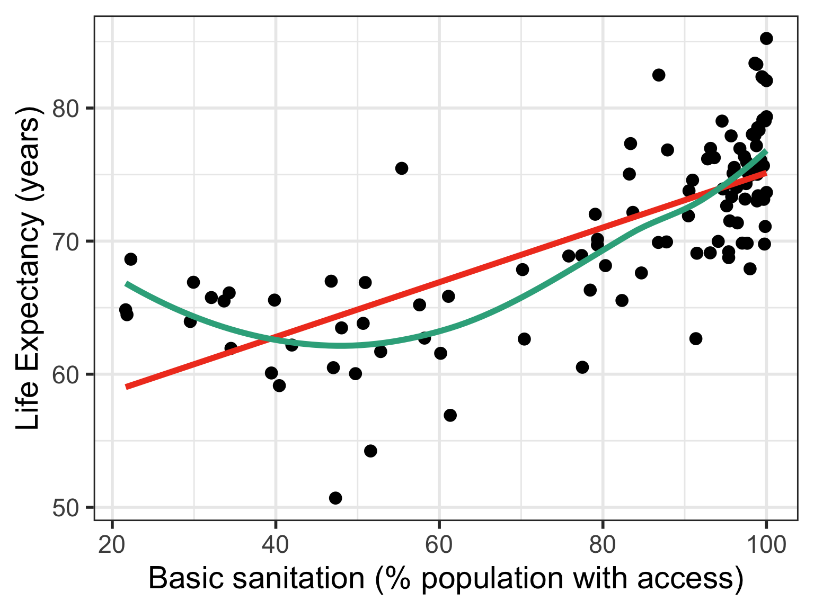
If residuals are not normal


If residuals have non-constant variance


Case 1: Relationship does not look linear
- Transform independent variable (X)
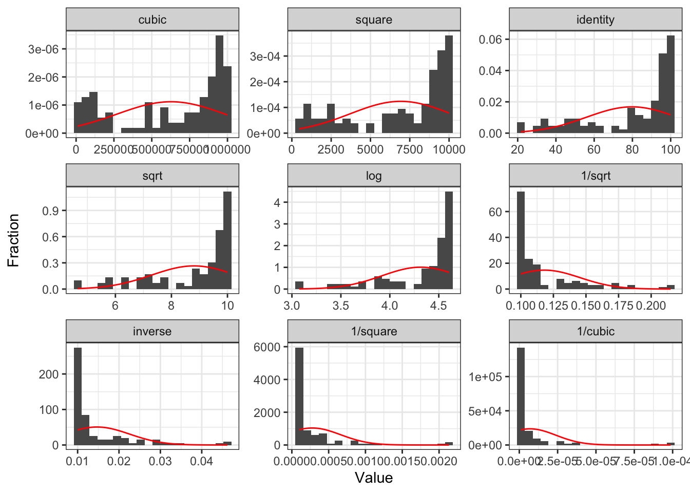
Poll Everywhere Question 1
Case 1: Relationship does not look linear
- Transform dependent/response variable (Y)
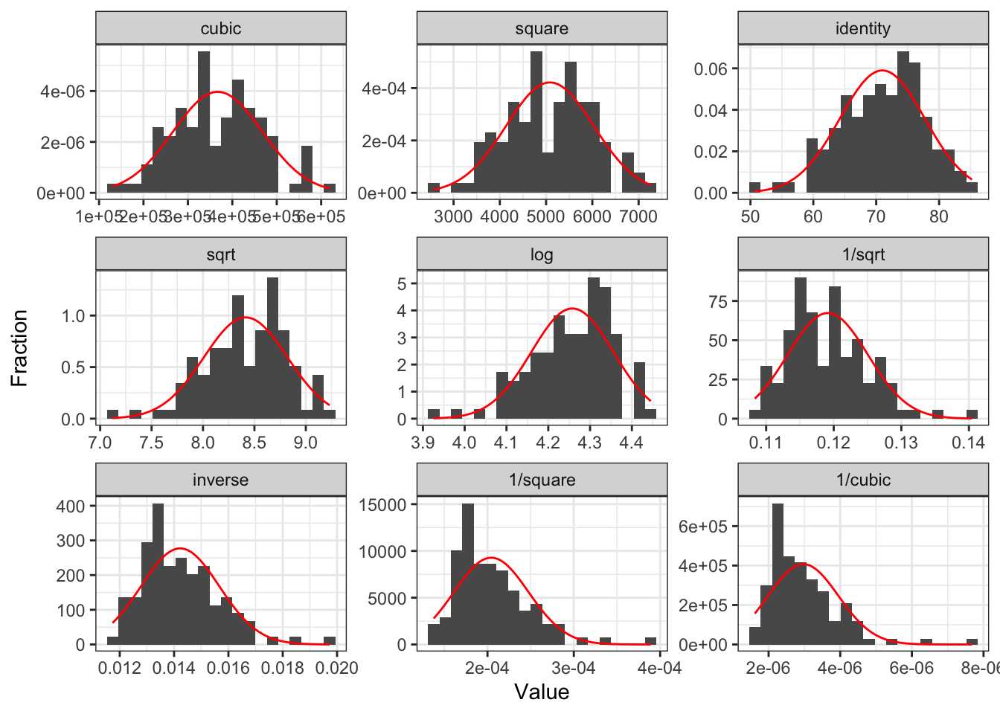
Case 1: Add quadratic and cubic transformations to dataset
- Helpful to make a new variable with the transformation in your dataset
[1] "geo" "territory" "life_exp"
[4] "freedom_status" "vax_rate" "co2_emissions"
[7] "basic_sani" "happiness_score" "income_level_4"
[10] "cell_phones_100" "basic_sani_80_above" "fs_order"
[13] "LE_2" "LE_3" "BS_2"
[16] "BS_3" Case 1: We are going to compare a few different models with transformations
We are going to call life expectancy \(LE\) and cell phones per 100 people \(CP\)
- Model 1: \(LE = \beta_0 + \beta_1 BS + \epsilon\)
- Model 2: \(LE^2 = \beta_0 + \beta_1 BS + \epsilon\)
- Model 3: \(LE^3 = \beta_0 + \beta_1 BS + \epsilon\)
- Model 4: \(LE = \beta_0 + \beta_1 BS + \beta_2 BS^2 +\epsilon\)
- Model 5: \(LE = \beta_0 + \beta_1 BS + \beta_2 BS^2 +\beta_3 BS^3 +\epsilon\)
- Model 6: \(LE^3 = \beta_0 + \beta_1 BS + \beta_2 BS^2 +\beta_3 BS^3 +\epsilon\)
Poll Everywhere Question 2
Case 1: Compare Scatterplots: does linearity improve?
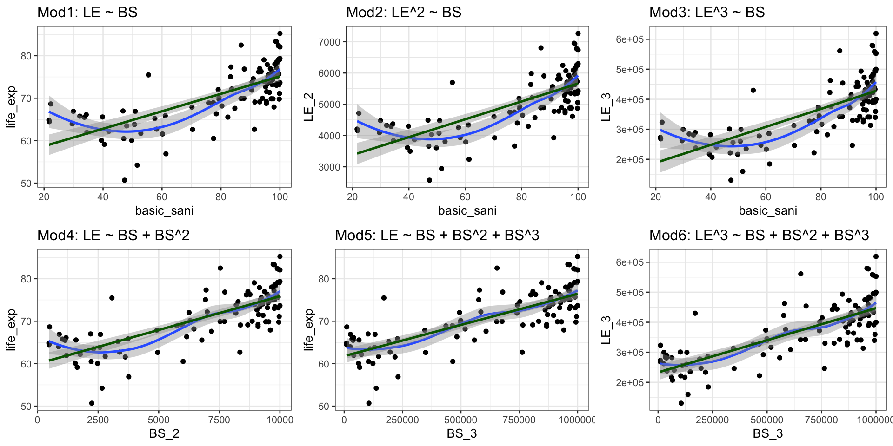
Case 1: Run models with transformations: examples
Model 1: \(LE = \beta_0 + \beta_1 BS + \epsilon\)
| term | estimate | std.error | statistic | p.value |
|---|---|---|---|---|
| (Intercept) | 54.583 | 1.616 | 33.781 | 0.000 |
| basic_sani | 0.206 | 0.019 | 10.581 | 0.000 |
Model 5: \(LE = \beta_0 + \beta_1 BS + \beta_2 BS^2 +\beta_3 BS^3 +\epsilon\)
| term | estimate | std.error | statistic | p.value |
|---|---|---|---|---|
| (Intercept) | 80.275 | 9.192 | 8.733 | 0.000 |
| basic_sani | −0.857 | 0.502 | −1.707 | 0.091 |
| BS_2 | 0.012 | 0.008 | 1.400 | 0.165 |
| BS_3 | 0.000 | 0.000 | −0.812 | 0.419 |
Case 1: Issues with interpretability
When we transform variables, interpreting the coefficients becomes more difficult
For example, in Model 5: \[LE = \beta_0 + \beta_1 BS + \beta_2 BS^2 +\beta_3 BS^3 +\epsilon\]
- The effect of basic sanitation on life expectancy is not constant anymore
- The effect of a one unit increase in basic sanitation on life expectancy depends on the current level of basic sanitation
- \(\beta_1\) cannot be interpreted on its own anymore
Three cases to explore different transformations
If relationship does not look linear

If residuals are not normal
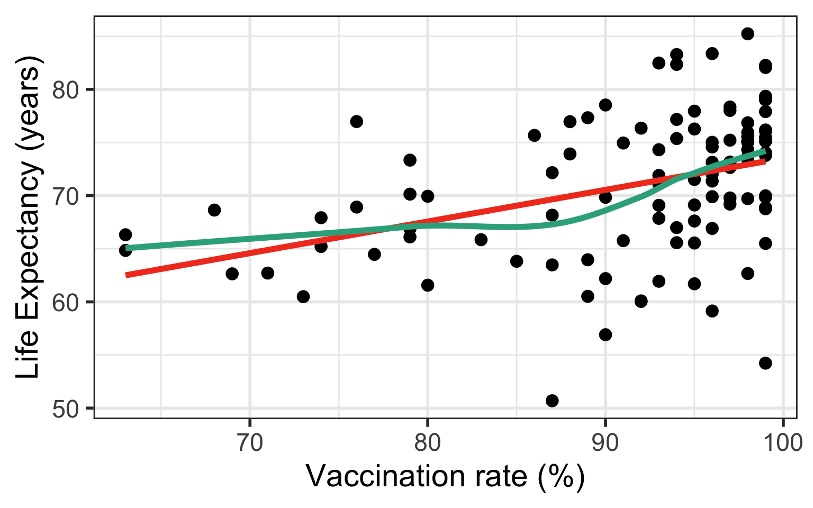
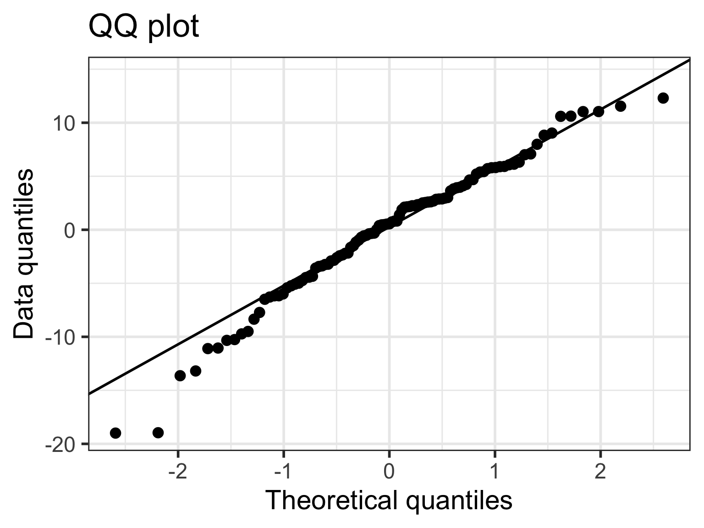
If residuals have non-constant variance

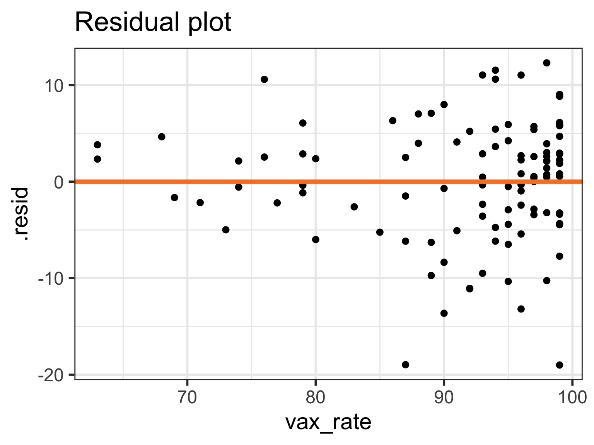
Case 2/3: Residuals are not normal or non-constant variance
- Transform dependent/response variable (Y)

Case 2/3: Run models with transformations: examples
Model 1: \(LE = \beta_0 + \beta_1 VR + \epsilon\)
| term | estimate | std.error | statistic | p.value |
|---|---|---|---|---|
| (Intercept) | 43.733 | 6.432 | 6.799 | 0.000 |
| vax_rate | 0.298 | 0.070 | 4.255 | 0.000 |
Model 4: \(LE = \beta_0 + \beta_1 VR + \beta_2 VR^2 +\epsilon\)
| term | estimate | std.error | statistic | p.value |
|---|---|---|---|---|
| (Intercept) | 126.503 | 50.898 | 2.485 | 0.015 |
| vax_rate | −1.684 | 1.211 | −1.390 | 0.167 |
| VR_2 | 0.012 | 0.007 | 1.639 | 0.104 |
Case 2/3: Normal Q-Q plots comparison
- All QQ plots look roughly the same… some improvement on lower tail in model 2, 3, 6
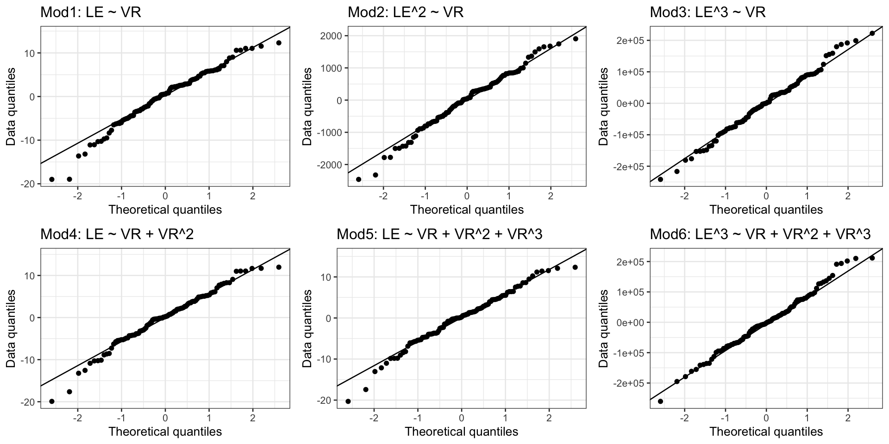
Case 2/3:Residual plots comparison
- Models 4-6 have more homoskedasticity
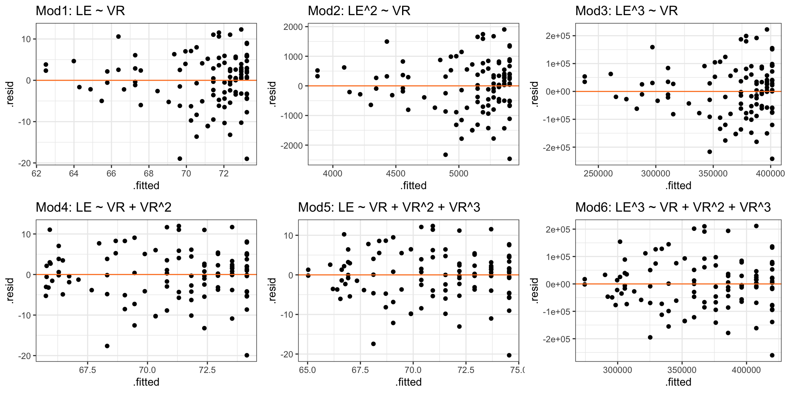
Tips on transformations
Recall, assessing our LINE assumptions are not on \(Y\) alone!! (it’s \(Y|X\), aka \(\epislon\))
- We can use
gladder()to get a sense of what our transformations will do to the data, but we need to check with our scatterplots, QQ plots, and residual plots again!!
- We can use
Transformations usually work better if all original values are positive (or negative)
If observation has a 0, then we cannot perform certain transformations
Log function only defined for positive values
- We might take the \(log(X+1)\) if \(X\) includes a 0 value
When we make cubic or square transformations, we MUST include the original \(X\) in the model
- We do not do this for \(Y\) though
Choosing to transform or not
If the model without the transformation is blatantly violating a LINE assumption
- Then a transformation is a good idea
- If transformations do not help, then keep it untransformed
If the model without a transformation is not following the LINE assumptions very well, but is mostly okay
- Then try to avoid a transformation
- Think about what predictors might need to be added
- Especially if you keep seeing the same points as influential
- If interpretability is important in your final work, then transformations are not a great solution
Learning Objectives
- Implement a model with data transformations to meet LINE assumptions.
- Use visualizations and cut off points to flag potentially influential points using residuals, leverage, and Cook’s distance
- Handle influential points and assumption violations by checking data errors, reassessing the model, and making data transformations.
Types of influential points
Outliers
- An observation (\(X_i, Y_i\)) whose response \(Y_i\) does not follow the general trend of the rest of the data
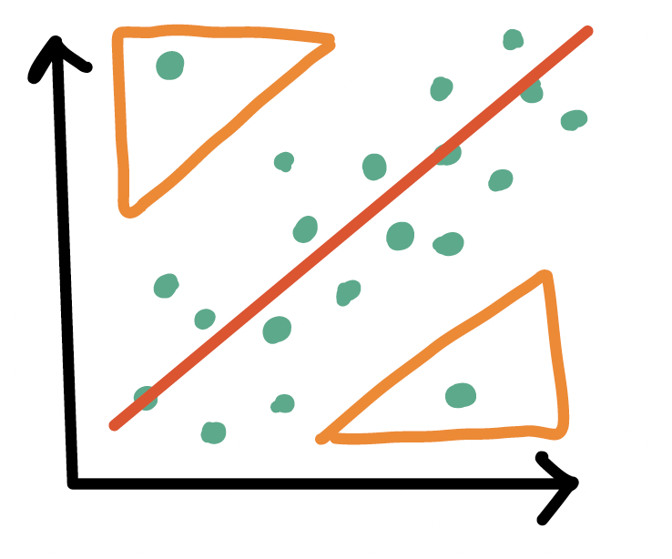
High leverage observations
- An observation (\(X_i, Y_i\)) whose predictor \(X_i\) has an extreme value
- \(X_i\) can be an extremely high or low value compared to the rest of the observations
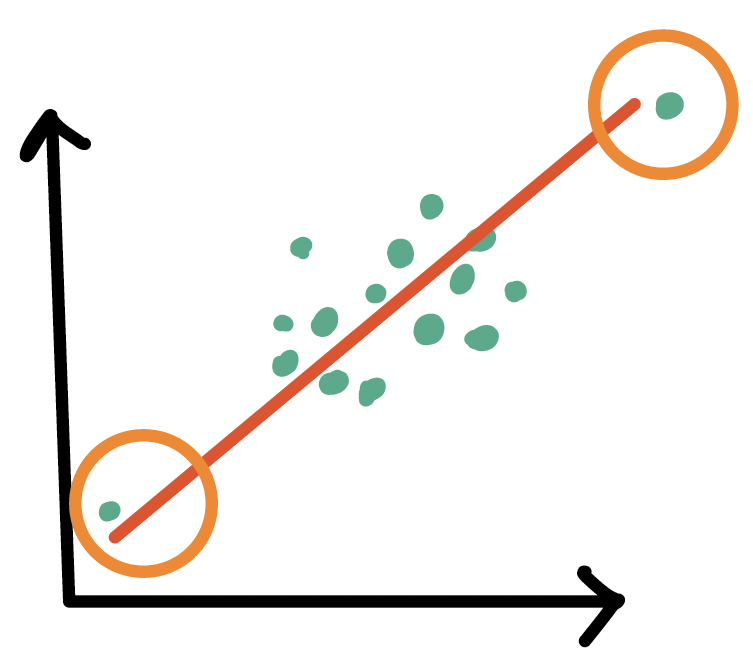
Tools to measure influential points
- Internally standardized residual (outlier)
- Leverage (high leverage point)
- Cook’s distance (overall influence, both)
Poll Everywhere Question 3
Outliers
- An observation (\(X_i, Y_i\)) whose response \(Y_i\) does not follow the general trend of the rest of the data
How do we determine if a point is an outlier?
- Scatterplot of \(Y\) vs. \(X\)
- Followed by evaluation of its residual (and standardized residual)
- Typically use the internally standardized residual (aka studentized residual)
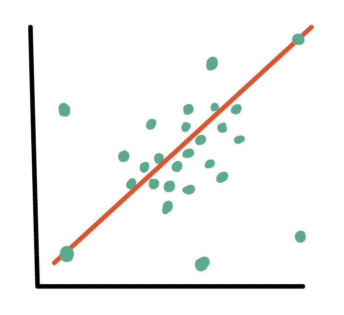
Identifying outliers
Internally standardized residual
\[ r_i = \frac{\widehat\epsilon_i}{\sqrt{\widehat\sigma^2(1-h_{ii})}} \]
We flag an observation if the standardized residual is “large”
Different sources will define “large” differently
PennState site uses \(|r_i| > 3\)
autoplot()shows the 3 observations with the highest standardized residualsOther sources use \(|r_i| > 2\), which is a little more conservative
Countries that are outliers (\(|r_i| > 3\))
- We can identify the countries that are outliers
- This is the usual cut off that I use
# A tibble: 0 × 24
# ℹ 24 variables: territory <chr>, life_exp <dbl>, cell_phones_100 <dbl>,
# .std.resid <dbl>, .fitted <dbl>, .resid <dbl>, .hat <dbl>, .sigma <dbl>,
# .cooksd <dbl>, geo <chr>, freedom_status <fct>, vax_rate <dbl>,
# co2_emissions <dbl>, basic_sani <dbl>, happiness_score <dbl>,
# income_level_4 <chr>, basic_sani_80_above <chr>, fs_order <dbl>,
# LE_2 <dbl>, LE_3 <dbl>, BS_2 <dbl>, BS_3 <dbl>, VR_2 <dbl>, VR_3 <dbl>Countries that are outliers (\(|r_i| > 2\))
- For teaching purposes, I will use the cut off of 2
# A tibble: 6 × 24
territory life_exp cell_phones_100 .std.resid .fitted .resid .hat .sigma
<chr> <dbl> <dbl> <dbl> <dbl> <dbl> <dbl> <dbl>
1 Botswana 62.7 178. -2.41 76.8 -14.1 0.0401 5.82
2 France 83.4 116. 2.10 70.9 12.4 0.00953 5.86
3 Ireland 82.5 111. 2.03 70.4 12.1 0.00981 5.87
4 Lesotho 50.7 68.1 -2.68 66.4 -15.7 0.0284 5.78
5 Eswatini 54.2 121. -2.90 71.4 -17.2 0.00972 5.74
6 South Africa 60.5 161. -2.48 75.1 -14.6 0.0253 5.81
# ℹ 16 more variables: .cooksd <dbl>, geo <chr>, freedom_status <fct>,
# vax_rate <dbl>, co2_emissions <dbl>, basic_sani <dbl>,
# happiness_score <dbl>, income_level_4 <chr>, basic_sani_80_above <chr>,
# fs_order <dbl>, LE_2 <dbl>, LE_3 <dbl>, BS_2 <dbl>, BS_3 <dbl>, VR_2 <dbl>,
# VR_3 <dbl>Visual: Countries that are outliers (\(|r_i| > 2\))
Label only countries with large internally standardized residuals:
ggplot(aug1, aes(x = cell_phones_100, y = life_exp,
label = territory)) +
geom_point() +
geom_smooth(method = "lm", color = "darkgreen") +
geom_text(aes(label = ifelse(abs(.std.resid) > 2, as.character(territory), ''))) +
geom_vline(xintercept = mean(aug1$cell_phones_100), color = "grey") +
geom_hline(yintercept = mean(aug1$life_exp), color = "grey")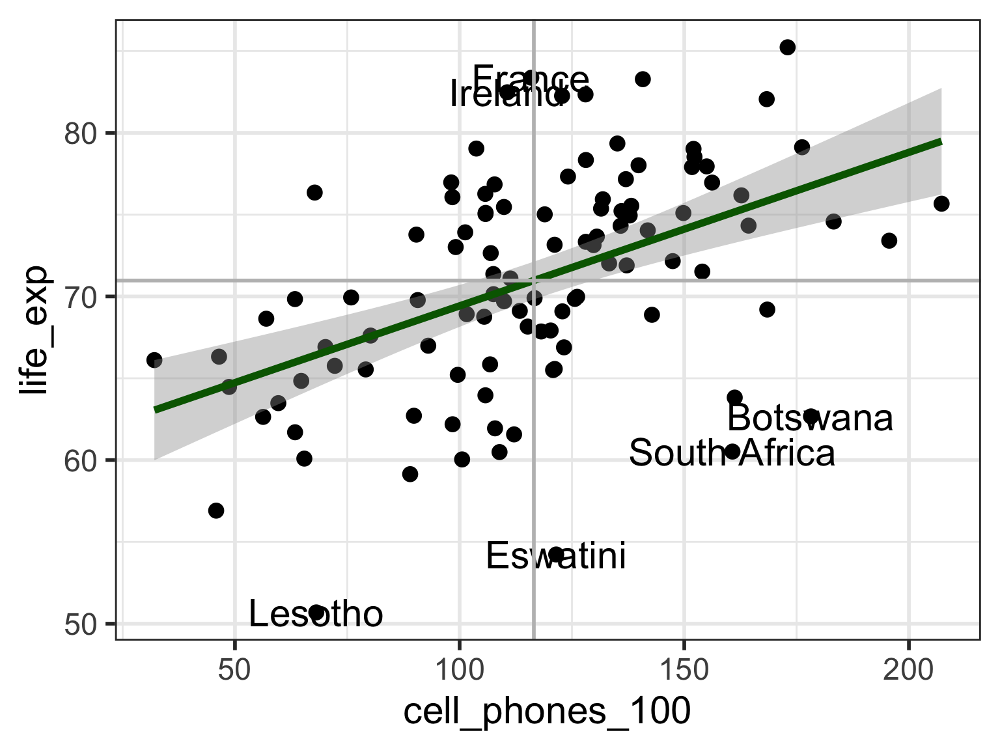
What does the model look like without outliers?
- When we remove outliers, how do our coefficient estimates change?
- We can compare the model with and without outliers
Model without outliers
Code
| term | estimate | std.error | statistic | p.value |
|---|---|---|---|---|
| (Intercept) | 59.479 | 1.760 | 33.791 | 0.000 |
| cell_phones_100 | 0.102 | 0.015 | 7.001 | 0.000 |
\[ \widehat{Y} = 59.48 + 0.102\cdot X \]
- Models have similar coefficient estimates, but standard errors are smaller for model without outliers
- This is not a reason to exclude outliers!!
High leverage observations
- An observation (\(X_i, Y_i\)) whose response \(X_i\) is considered “extreme” compared to the other values of \(X\)
How do we determine if a point has high leverage?
- Scatterplot of \(Y\) vs. \(X\)
- Calculating the leverage of each observation
Leverage \(h_i\)
Leverage
Measure of the distance between the x value (\(X_i\)) for the data point (\(i\)) and the mean of the x values (\(\overline{X}\)) for all \(n\) data points
- Values of leverage are: \(0 \leq h_i \leq 1\)
- We flag an observation if the leverage is “high”
Different sources will define “high” differently
Some textbooks use \(h_i > 4/n\) where \(n\) = sample size
Some people suggest \(h_i > 6/n\)
PennState site uses \(h_i > 3p/n\) where \(p\) = number of regression coefficients
Countries with high leverage (\(h_i > 4/n\))
- We can look at the countries that have high leverage
# A tibble: 3 × 24
territory life_exp cell_phones_100 .hat .std.resid .fitted .resid .sigma
<chr> <dbl> <dbl> <dbl> <dbl> <dbl> <dbl> <dbl>
1 Montenegro 75.7 207. 0.0758 -0.666 79.5 -3.82 5.98
2 Liberia 66.1 32.1 0.0669 0.531 63.0 3.06 5.99
3 UAE 73.4 196. 0.0599 -0.862 78.4 -4.99 5.97
# ℹ 16 more variables: .cooksd <dbl>, geo <chr>, freedom_status <fct>,
# vax_rate <dbl>, co2_emissions <dbl>, basic_sani <dbl>,
# happiness_score <dbl>, income_level_4 <chr>, basic_sani_80_above <chr>,
# fs_order <dbl>, LE_2 <dbl>, LE_3 <dbl>, BS_2 <dbl>, BS_3 <dbl>, VR_2 <dbl>,
# VR_3 <dbl>Poll Everywhere Question 4
Visual: Countries with high leverage (\(h_i > 4/n\))
Label only countries with large leverage:
ggplot(aug1, aes(x = cell_phones_100, y = life_exp,
label = territory)) +
geom_point() +
geom_smooth(method = "lm", color = "darkgreen") +
geom_text(aes(label = ifelse(.hat > 4/80, as.character(territory), ''))) +
geom_vline(xintercept = mean(aug1$cell_phones_100), color = "grey") +
geom_hline(yintercept = mean(aug1$life_exp), color = "grey")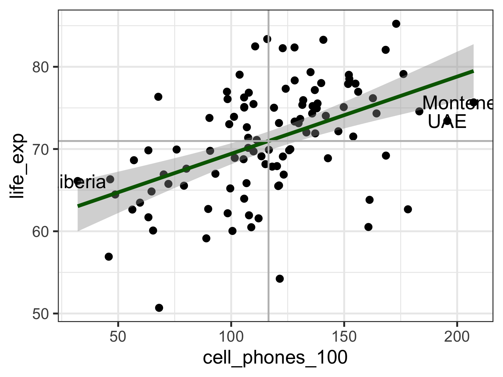
What does the model look like without the high leverage points?
- When we remove high leverage points, how do our coefficient estimates and their standard error change?
- We can compare the model with and without high leverage observations
Model with high leverage observations
Model without high leverage observations
Code
| term | estimate | std.error | statistic | p.value |
|---|---|---|---|---|
| (Intercept) | 58.964 | 2.249 | 26.219 | 0.000 |
| cell_phones_100 | 0.104 | 0.019 | 5.528 | 0.000 |
\[ \widehat{Y} = 58.96 + 0.104\cdot X \]
- High leverage points can change your coefficient estimate, but not necessarily
Cook’s distance
Measures the overall influence of an observation
Attempts to measure how much influence a single observation has over the fitted model
Measures how coefficient estimates change when the \(ith\) observation is removed from the model
Combines leverage and outlier information
The Cook’s distance for the \(i^{th}\) observation
\[d_i = \frac{h_i}{2(1-h_i)} \cdot r_i^2\] where \(h_i\) is the leverage and \(r_i\) is the studentized residual
- Another rule for Cook’s distance that is not strict:
- Investigate observations that have \(d_i > 1\)
- Cook’s distance values are already in the augment tibble:
.cooksd
Countries with high Cook’s distance
# A tibble: 105 × 24
territory life_exp cell_phones_100 .cooksd .hat .std.resid .fitted .resid
<chr> <dbl> <dbl> <dbl> <dbl> <dbl> <dbl> <dbl>
1 Botswana 62.7 178. 0.122 0.0401 -2.41 76.8 -14.1
2 Lesotho 50.7 68.1 0.105 0.0284 -2.68 66.4 -15.7
3 South Afr… 60.5 161. 0.0797 0.0253 -2.48 75.1 -14.6
4 Cote d'Iv… 63.8 161. 0.0488 0.0256 -1.93 75.2 -11.4
5 Mozambique 56.9 45.8 0.0428 0.0498 -1.28 64.3 -7.43
6 Singapore 85.2 173. 0.0426 0.0352 1.53 76.3 8.96
7 Jordan 76.4 67.7 0.0423 0.0287 1.69 66.4 9.95
8 Eswatini 54.2 121. 0.0413 0.00972 -2.90 71.4 -17.2
9 UAE 73.4 196. 0.0237 0.0599 -0.862 78.4 -4.99
10 France 83.4 116. 0.0212 0.00953 2.10 70.9 12.4
# ℹ 95 more rows
# ℹ 16 more variables: .sigma <dbl>, geo <chr>, freedom_status <fct>,
# vax_rate <dbl>, co2_emissions <dbl>, basic_sani <dbl>,
# happiness_score <dbl>, income_level_4 <chr>, basic_sani_80_above <chr>,
# fs_order <dbl>, LE_2 <dbl>, LE_3 <dbl>, BS_2 <dbl>, BS_3 <dbl>, VR_2 <dbl>,
# VR_3 <dbl>Plotting Cook’s Distance
plot(model)shows figures similar toautoplot()- 4th plot is Cook’s distance (not available in
autoplot())
- 4th plot is Cook’s distance (not available in
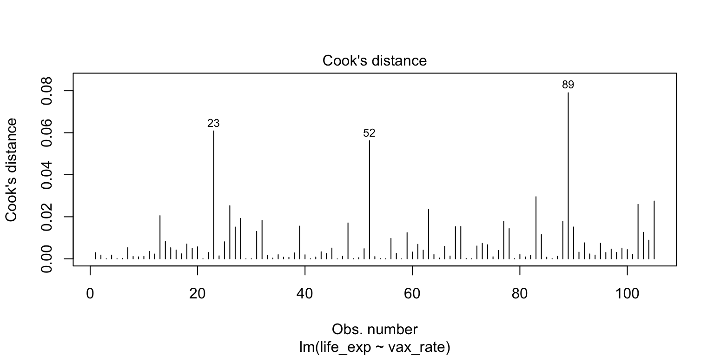
What does the model look like without the high Cook’s distance points?
- When we remove high Cook’s distance, how do our coefficient estimates and their standard error change?
- We can compare the model with and without high Cook’s distance points
Model with high Cook’s distance observations
Model without high Cook’s distance observations
Code
| term | estimate | std.error | statistic | p.value |
|---|---|---|---|---|
| (Intercept) | 60.221 | 1.988 | 30.290 | 0.000 |
| cell_phones_100 | 0.095 | 0.016 | 5.779 | 0.000 |
\[ \widehat{Y} = 60.22 + 0.095\cdot X \]
- High Cook’s distance points can change your coefficient estimate or standard errors
Summary of how we identify influential points
- Use scatterplot of \(Y\) vs. \(X\) to see if any points fall outside of range we expect
- Use standardized residuals, leverage, and Cook’s distance to further identify those points
Look at the models run with and without the identified points to check for drastic changes
Look at QQ plot and residuals to see if assumptions hold without those points
Look at coefficient estimates to see if they change in sign and large magnitude
- Next: how to handle? It’s a little wishy washy
Learning Objectives
Implement a model with data transformations to meet LINE assumptions.
Use visualizations and cut off points to flag potentially influential points using residuals, leverage, and Cook’s distance
- Handle influential points and assumption violations by checking data errors, reassessing the model, and making data transformations.
How do we deal with influential points?
If an observation is influential, we perform a sensitivity analysis:
- We took out the influential points we identified then reran the model
- Often, you’ll see that the “influential points” have not drastically changed your estimates
- A change in sign (for example: positive slope to negative slope)
- A really large increase (think more than 2x the original value)
If an observation is influential, we check data errors:
Was there a data entry or collection problem?
If you have reason to believe that the observation does not hold within the population (or gives you cause to redefine your population)
If an observation is influential, we check our model:
Did you leave out any important predictors?
Should you consider adding some interaction terms?
Is there any nonlinearity that needs to be modeled?
Important note on influential observations
- It’s always weird to be using numbers to help you diagnose an issue, but the issue kinda gets unresolved
Basically, deleting an observation should be justified outside of the numbers!
- If it’s an honest data point, then it’s giving us important information!
Checking our model
An observation may be influential if the model is not correctly specified
- We may also see issues with the LINE assumptions
What are our options to specify the model “correctly?”
See if we need to add predictors to our model
- Nicky’s thought for our life expectancy example
Try a transformation if there is an issue with linearity or normality
Try a transformation if there is unequal variance
Try a weighted least squares approach if unequal variance (might be lesson at end of course)
Try a robust estimation procedure if we have a lot of outlier issues (outside scope of class)
Lesson 8: SLR 5